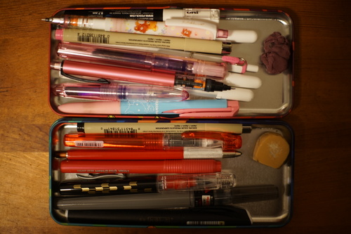

Shout out to hors for correctly identifying one of my posts made on an anonymous woodstock fan forum! And also Flonne because she's nice and deserves a shout out too :3

I made the mistake of clicking on jet pens dot com after the release of the limited edition Platinum Preppy yagasuri and happened to accidentally hit the buy button after careful order optimization and peer pressure. I LOVE yagasuri so much that I even ignored the pink sakura tatewaku pen! I really wanted an EF nib, so I ordered a EF preppy as well. I chose red because the red feed would be a fun option instead of the gray feed that is included. I spent a few days wondering what the heck I would do with the extra preppy. I don't even need 3 fountain pens let alone four! I discovered Platinum makes marker nibs which solved my problem perfectly.
Jetpens always wraps their packages very nicely. For some reason, I didn't expect the red preppy to come with red ink. I did a really bad job removing the ink and my hands are red now ;_; I cleaned both pen bodies out and dried them out with my airbrush because I was impatient. I couldn't figure out how to get the feed out so there's still some condensation left in each oops! I stored the inks in each refill and filled them both with the choco ink I also ordered.
The choco ink is a little disappointing. My violet ink is very strongly scented compared to it! You can just barely smell it when it's right up to your nose. I really like the color because it's a lot softer than black when drawing and not unnatural on a face like blue or purple. I think I'll probably buy the rose ink in my next moment of weakness. I want to sniff it too.
I'm very happy so far with the yagasuri preppy with the red feed so far! It's very stylish and the only labeling is small and on the cap! The red preppy is... disappointing because it's got ugly non removable decals. The "EF02 preppy" isnt the end of the world, but the UPC is printed on! Why!! It's like a bad tattoo that commemorates one moment at the checkout counter! The sign pen nib isn't as nice as a copic brush nib but actually can we get this?? New idea: buy an empty ciao and fill it with fountain pen ink.
Somehow the pokemon pencil tin on my desk has developed a separate style on each side?! mysterious!!
Maybe my next website will be yagasuri instead of houndstooth? Much to think about...